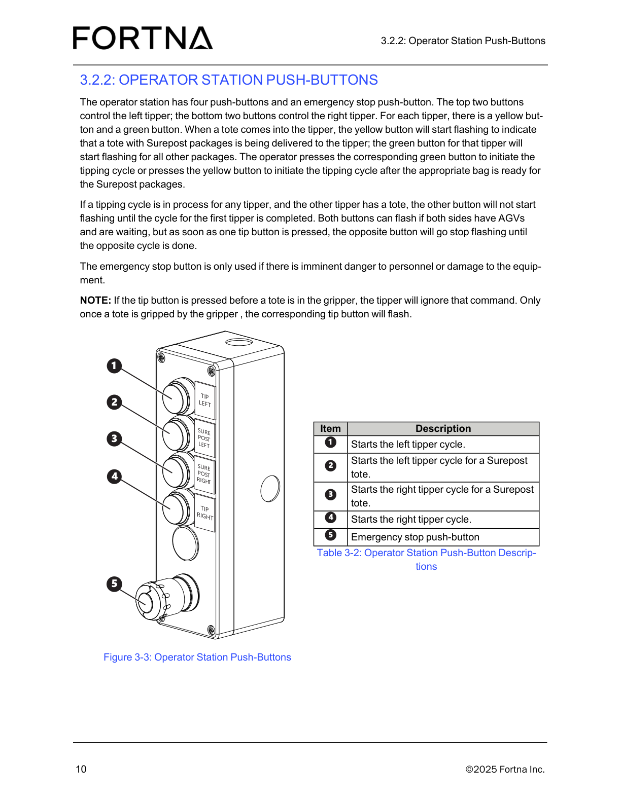

| Procedure ID | proc_identify_operator_station_components_v1 |
|---|---|
| Title | Identify Operator Station Components (Tipper, Chute, Stacklights, HMI, Push-Buttons, Rotary Station) |
| Procedure Type | operation |
| Primary Role | operator |
| Support Safe | Yes |
| Capability Tags | device_roster_state |
| Access Surface | physical_floor |
| Audience Roles | operator |
| Failure Pattern Tags | None |
| Validation Status | needs_sme_review |
| Merge Status | source_finalized |
Walk up to the OptiSweep operator station and visually locate the key components used to receive parcels from the tippers: two tippers, chute, two stacklights, operator station HMI, four push-buttons, and rotary station.
Use when you need to visually confirm where the operator-station components are located so you can interact with the operator station HMI and push-buttons and understand how parcels flow from the tippers to the chute and rotary station.



Responsible role: operator
Instruction:
Walk to the OptiSweep operator station area where an operator receives parcels from the tippers.
Expected result:
You are at the operator station area that contains (at minimum) the two tippers, chute, rotary station, operator station HMI screen, and push-buttons.
Stop or Escalate If:
Responsible role: operator
Instruction:
At the operator station, visually locate the two tippers (Tipper = Item 1 in Figure 3-1 / Table 3-1).
Expected result:
Both tippers are visible at the operator station and correspond to Item 1 (Tipper) in Figure 3-1.
Stop or Escalate If:
Responsible role: operator
Instruction:
Visually locate the chute (Chute = Item 2 in Figure 3-1 / Table 3-1) positioned to receive parcels from the tippers.
Expected result:
The chute is visible and corresponds to Item 2 (Chute) in Figure 3-1.
Stop or Escalate If:
Responsible role: operator
Instruction:
Look on the top of the frame on either side of the chute and identify the two stacklights (Stacklight = Item 3 in Figure 3-1 / Table 3-1).
Expected result:
Two stacklights are visible on the top of the frame, one on each side of the chute, matching Item 3 (Stacklight).
Stop or Escalate If:
Responsible role: operator
Instruction:
Find the operator station HMI screen (Operator station HMI = Item 5 in Figure 3-1 / Table 3-1).
Expected result:
The operator station HMI screen is visible and corresponds to Item 5 (Operator station HMI) in Figure 3-1.
Stop or Escalate If:
Responsible role: operator
Instruction:
Locate the push-button panel on the operator station (Push-buttons = Item 6 in Figure 3-1 / Table 3-1). On the push-button panel, identify the TIP LEFT, TIP RIGHT, and the Surepost left/right buttons as shown in the push-button photo.
Expected result:
The push-button panel is visible and corresponds to Item 6 (Push-buttons) in Figure 3-1; the panel includes TIP LEFT, TIP RIGHT, SURE POST LEFT, and SURE POST RIGHT buttons.
Stop or Escalate If:
Responsible role: operator
Instruction:
Locate the rotary station under the chute (Rotary station = Item 7 in Figure 3-1 / Table 3-1).
Expected result:
The rotary station is visible under the chute and corresponds to Item 7 (Rotary station) in Figure 3-1.
Stop or Escalate If: